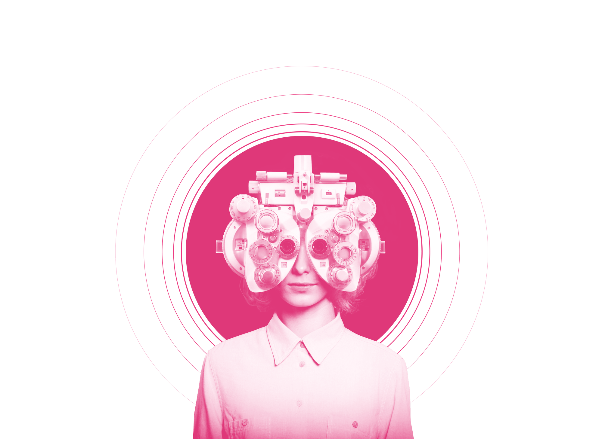

<!-- First fold starting-->
<section class="refractive-top-section">
    <div class="bg-purple" style="/* height: calc(100vh - 100px); */position: relative;">
        <div class="refractive-mob-top-height" style="height: calc(100vh - 150px);">
        </div>
        <div class="refractive-mob-bottom-pos" style="z-index: 10; position: absolute; bottom: 0px;">
            <div style="text-align: center; position: relative; overflow: hidden;">
                
                <div class="top-text" style="display: inline-block; position: absolute; bottom: 10px; margin-left: -300px;padding-bottom: 1rem;">
                    <h1 class="m-heading p-b-25 m-line-animation" style="padding-bottom:0px;">
                        <div style="display: inline-block;text-shadow: #80808059 1px 1px 6px;">  <div class="m-heading-block">REFRACTIVE</div> <div class="m-heading-block">SURGERIES </div>
                        
                      </div>
                    </h1>
                    <p class="font-blue">Enjoy the freedom to see the world without
                        <br>the hassels of contacts and glasses.</p>
                    <div id='refractive-tabs' class="bg-pink" style="background-color: rgba(235, 60, 128, 0.85); border-radius: 4px; box-shadow: #2f2f2f57 1px 1px 8px 2px;min-width: 600px; ">
                        <ul style="list-style: none; padding: 0px;height: 56px;margin-bottom: 0px;">
                            <li ng-click="go('refractive.prelex.procedure','section.refractive-top-section .refractive-bg-pink', $event)" style="display: inline-block; width: 150px;" class="m-refractive-heading text-center text-upper active">
                                PRELEX
                                <span></span>
                            </li>
                            <li ng-click="go('refractive.lasik2.types','section.refractive-top-section .refractive-bg-pink', $event)" class="m-refractive-heading text-center text-upper" style="display: inline-block; width: 150px; ">
                                LASIK
                                <span></span>
                            </li>
                            <li ng-click="go('refractive.visianicl.procedure','section.refractive-top-section .refractive-bg-pink', $event)" class="m-refractive-heading text-center text-upper" style="display: inline-block; width: 150px; ">
                                VISIAN ICL
                                <span></span>
                            </li>
                        </ul>
                    </div>
                </div>
            </div>
        </div>
        <div class="bg-pink refractive-bg-pink" style="height: 200px;">
        </div>
    </div>
</section>
<!-- First fold ending-->
<div ui-view></div>
<!-- Fifty fold starting-->
<!-- Fifty fold ending -->
<!-- Wrap the rest of the page in another container to center all the content. -->
<!-- /.container -->
<!-- Bootstrap core JavaScript
    ================================================== -->
<!-- Placed at the end of the document so the pages load faster -->
<script>
function getRandomArbitrary(min, max) {
    return (Math.random() * (max - min) + min).toPrecision(2);
};

function mWordAnimation() { // splitWord selector
    var sw = $('.split-words')[0].innerText;
    var words = sw.split(' ');
    htmlx = '';
    for (var i = 0; i < words.length; i++) {
        delay = getRandomArbitrary(0.1, 2.4);
        htmlx = htmlx + "<div class='word'><div class='word-inner' style='transition-delay: " + delay + "s;'>" + words[i] + "</div></div>&nbsp;";
    }
    $('.split-words').html(htmlx);
    $('.split-words').find('.word').each(function(i, _word) {
        _word.style.width = _word.offsetWidth + 10 + 'px';
        $(_word).find('.word-inner').css('width', '0px');
    });
}

var startPsrAnimation = function() {
    $('.animation-block').each(function(index, value) {
        if ($(this).hasClass('active'))
            return;
        var top_of_element = jQuery(this).offset().top;
        var bottom_of_element = jQuery(this).offset().top + jQuery(this).outerHeight();
        var top_of_screen = jQuery(window).scrollTop();
        var bottom_of_screen = jQuery(window).scrollTop() + jQuery(window).height();

        if ((bottom_of_screen > top_of_element) && (top_of_screen < bottom_of_element) && (bottom_of_screen - top_of_element > 180)) {
            // The element is visible, do something
            //console.log('visibile'+index);
            $(this).addClass('active');
            $(this).find('.m-line-animation').addClass('m-animate');
            var t = this;
            setTimeout(function() {
                var that = t;
                $(that).find('.m-letter-animation').addClass('m-animate');
                setTimeout(function() {
                    // mWordAnimation($(that).find('.split-words'));
                    $(that).find('.m-word-animation').addClass('m-animate');
                }, 1000);
            }, 600);

        } else {
            //console.log('not');
            // The element is not visible, do something else
        }
    });
}

// $(window).on("scroll", function(e) {
//         calculateOpacity();
//     })

$(document).ready(function() {
    // mWordAnimation();
    startPsrAnimation();

    // setTimeout(function(){
    //     $('.animation-block').addClass('active');
    // },300);
    var refractiveTabsXAxis = $('#refractive-tabs').offset().top - 76;
    $(window).scroll(function(e) {
        var nav = document.getElementsByTagName('nav')
        const offsetTop = nav[0].clientHeight;
        var windowScrollX = $(window).scrollTop();
        var leftPanelRowX = $('.m-left-panel-row').offset().top - offsetTop;
        if (windowScrollX > leftPanelRowX && window.innerWidth > 500) {
            if ($('.m-left-panel-row .right-sec').offset().top + $('.m-left-panel-row .right-sec').height() - 100 > windowScrollX + $('.m-left-panel').height()) {
                if (!$('.m-left-panel').hasClass('m-fixed-links')) {
                    const panels = document.getElementsByClassName('m-left-panel');
                    if (panels.length) {
                        const mLeftPanel = panels[0];
                        const panelBounds = mLeftPanel.getBoundingClientRect();
                        $('.m-left-panel').css({
                            left: panelBounds.left + 'px',
                            top: offsetTop + 'px',
                            width: panelBounds.width + 'px'
                        });
                        $('.m-left-panel').addClass('m-fixed-links');
                        $('.m-left-panel').removeClass('m-relative-links')
                    }
                }
            } else {
                if (!$('.m-left-panel').hasClass('m-relative-links')) {
                    $('.m-left-panel').addClass('m-relative-links')
                    $('.m-left-panel').removeClass('m-fixed-links');
                    const newOff = windowScrollX - leftPanelRowX - offsetTop;
                    $('.m-left-panel').css({
                        top: newOff + 'px',
                        left: '',
                        width: ''
                    })
                }
            }
        } else if (windowScrollX < leftPanelRowX && window.innerWidth > 500) {
            $('.m-left-panel').removeClass('m-relative-links')
            $('.m-left-panel').removeClass('m-fixed-links');
            $('.m-left-panel').css({
                top: '',
                left: '',
                width: ''
            })
        }
        if (windowScrollX > refractiveTabsXAxis) {
            if (!$('#refractive-tabs').hasClass('refractivetabs-fixed'))
                $('#refractive-tabs').addClass('refractivetabs-fixed');
        } else {
            if ($('#refractive-tabs').hasClass('refractivetabs-fixed'))
                $('#refractive-tabs').removeClass('refractivetabs-fixed');
        }
    })
});


$('.bg-cataract-wall, .bg-pinkline').mousemove(function(e) {
    var change;
    var xpos = e.clientX;
    var ypos = e.clientY;
    var left = change * 20;
    var xpos = xpos * 2;
    ypos = ypos * 2;
    $('.man').css('top', ((0 + (ypos / 50)) + "px"));
    $('.man').css('right', ((0 + (xpos / 80)) + "px"));
    $('.bubbly2').css('bottom', ((-20 + (ypos / 50)) + "px"));
    $('.bubbly2').css('left', ((-40 + (xpos / 80)) + "px"));

});
// #### visible element check
$(window).scroll(function(e) {
    e.preventDefault();
    startPsrAnimation();

    //    $(window).on("scroll", function(e) {
    // if ($('.m-parallax-effect').visible()) {
    //     var that = $('.m-parallax-effect');
    //     calculateOpacity(that, 80);
    // }
    //  });
});
</script>
</body>

</html>